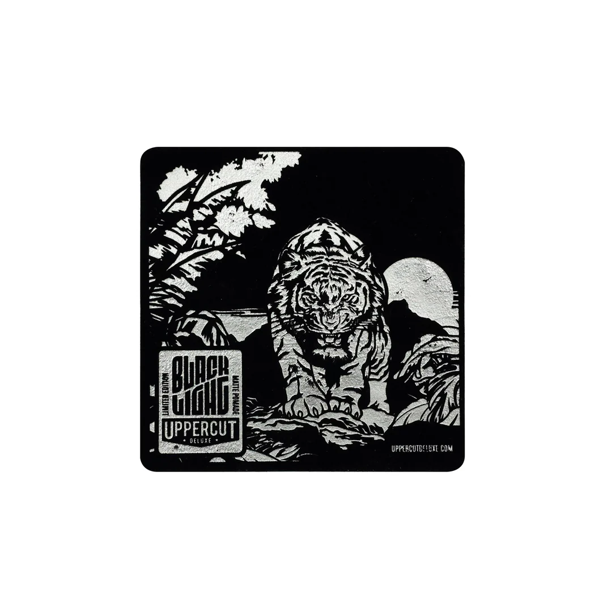
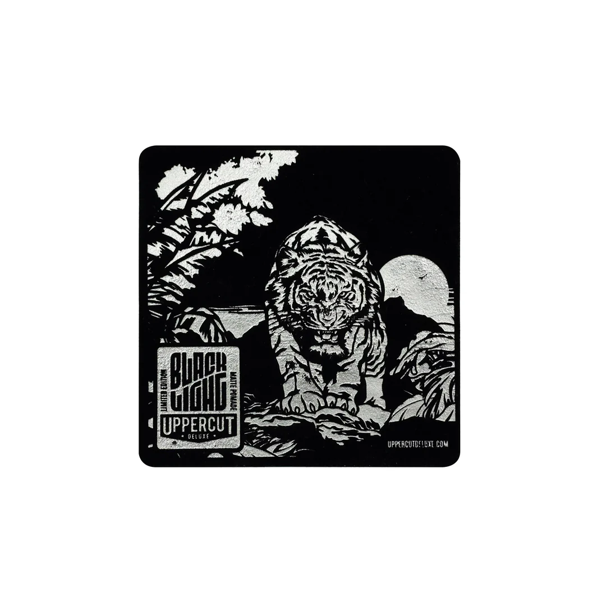

Uppercut Blacklight
Got the opportunity to work with the super-cool Uppercut Deluxe, an Australian born pomade and mens grooming company with influences stemming from 1950's barbering, skate culture and a no frills attitude! They wanted a film to show off their latest product - a limited edition hair pomade celebrating the vibrancy of poster art in the 1960's, and in particular the neon blacklight effect. After seeing the beautiful tiger and jungle artwork they had created for the tin and the accompanying sticker, velvet poster and mini blacklight torch we could feel the passion that went into this product, applying the same level of craftsmanship to our promotional film.
Process
To keep the feeling of a physical media we recreated a stop motion style using a cobination of real stop motion and some after effects trickery.
 
